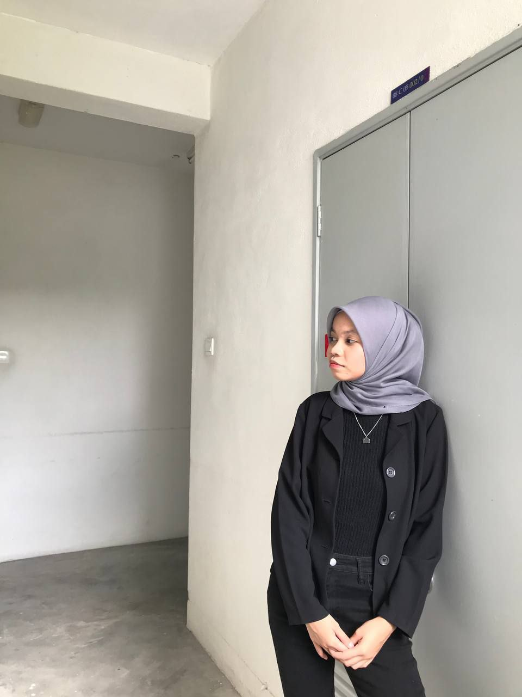
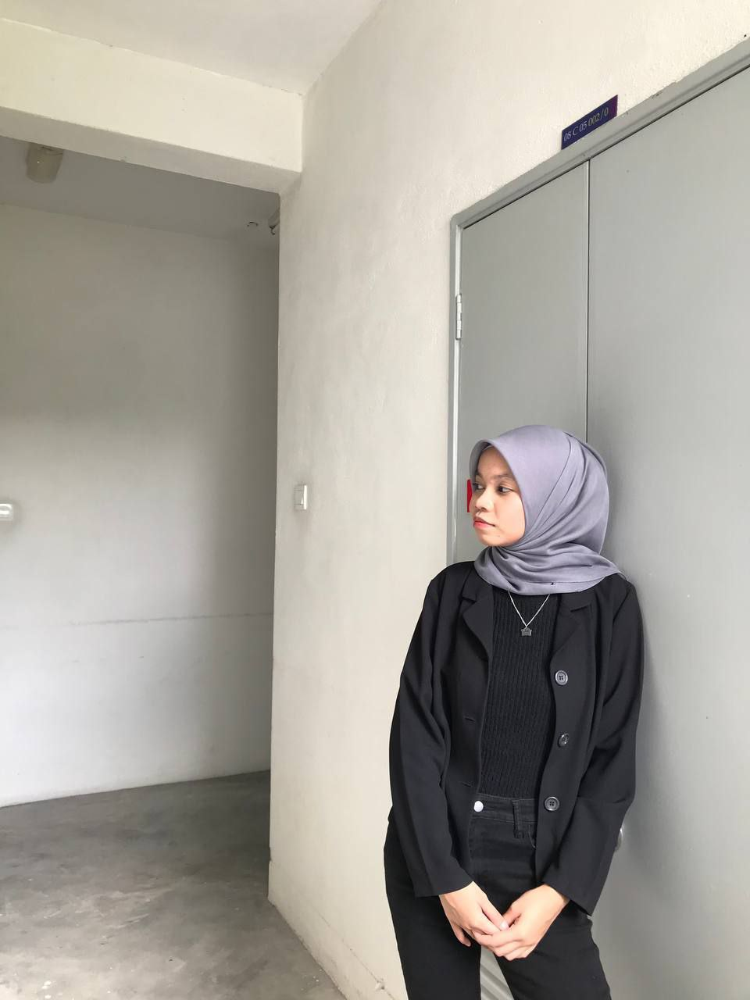

I am grateful for the opportunities UiTM has provided me to step out of my comfort zone and grow both academically and personally. Through active involvement and embracing my introverted nature, I have learned the value of authenticity and staying true to myself.
I am incredibly grateful for the guidance and support of my lecturers and friends, who have inspired me to strive for excellence and become a lifelong learner. Here's to the final year and the exciting adventures that await beyond graduation!
Hello there! My name is Anis Dania Binti Md Noridin, 2021109867 from N5IM1105A, known as nia and I am thrilled to introduce myself as a final-year student at UiTM Kampus Rembau. My time at this esteemed institution has been nothing short of transformative, shaping me into a dedicated and enthusiastic learner. Throughout my academic journey, UiTM has provided me with a nurturing environment where I have honed my skills, expanded my knowledge, and developed a strong sense of professionalism.
I am delighted to introduce myself as an introverted yet active student at UiTM. Although I may not be the most outgoing person in a crowd, I have actively engaged in various campus activities and events. As an introvert, I am a keen observer, and I value deep, meaningful connections with like-minded individuals. My small circle of friends has provided me with unwavering support and understanding, and I cherish the moments we spend engaging in meaningful discussions and shared interests.

 
